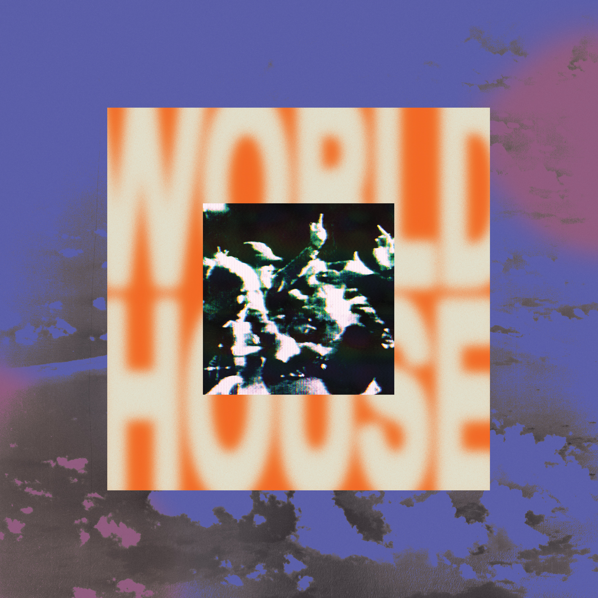
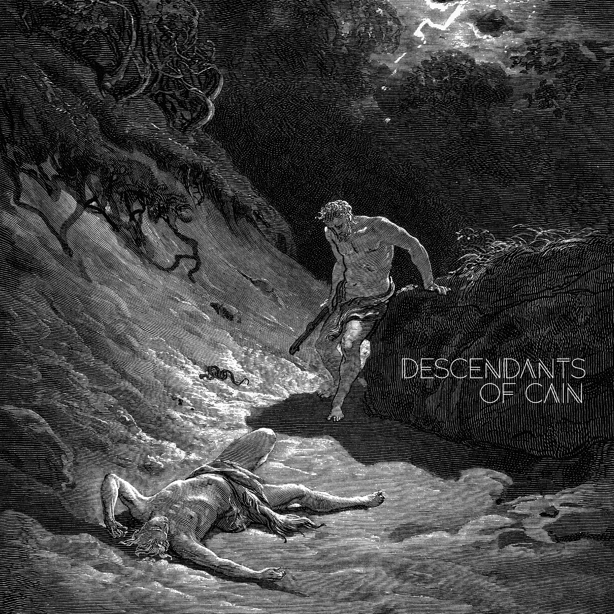
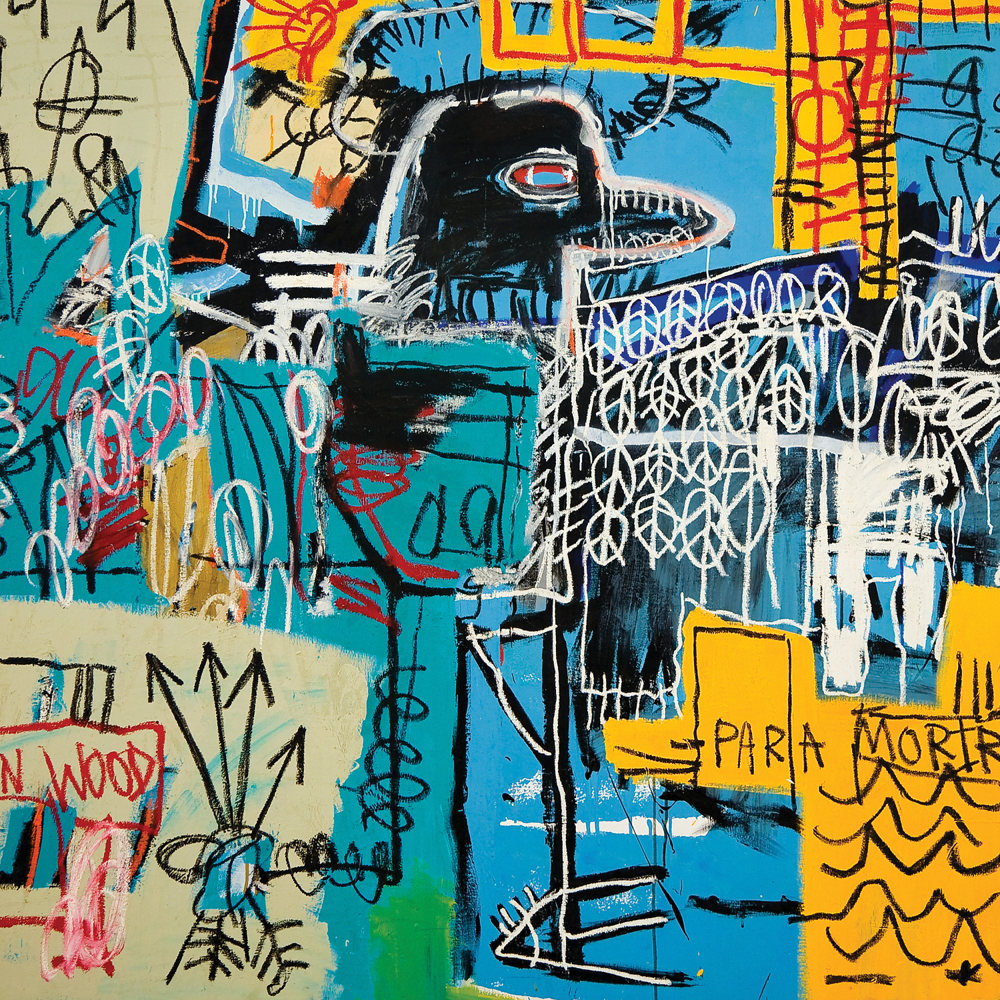
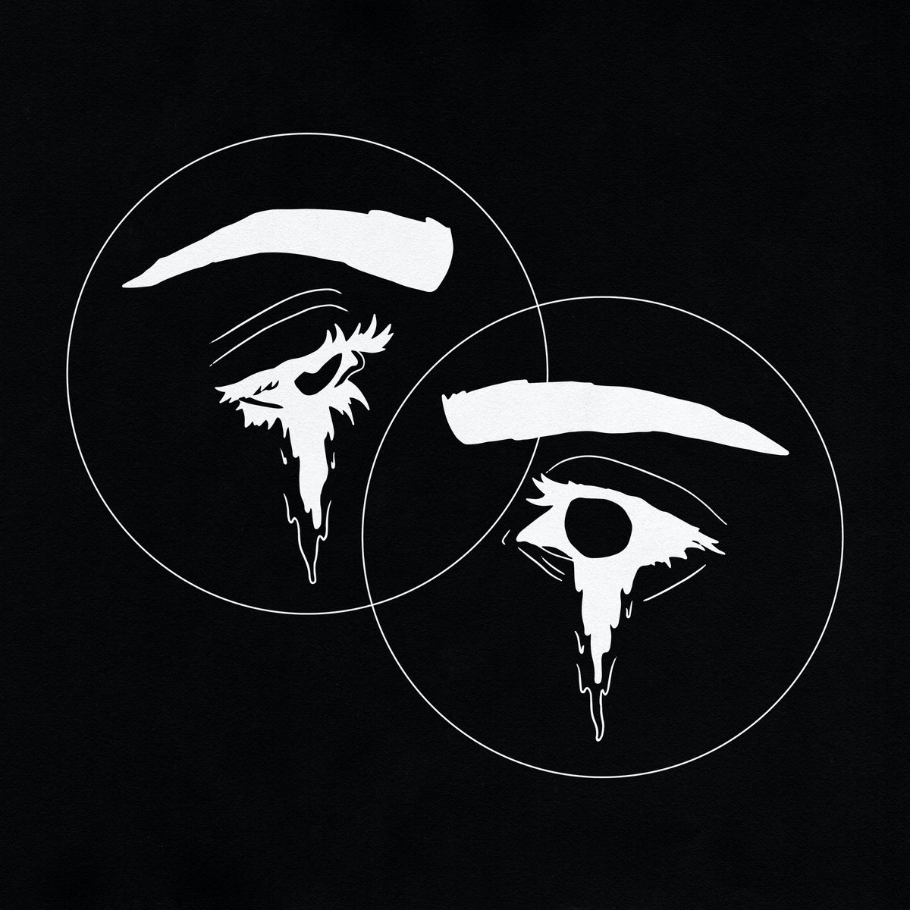
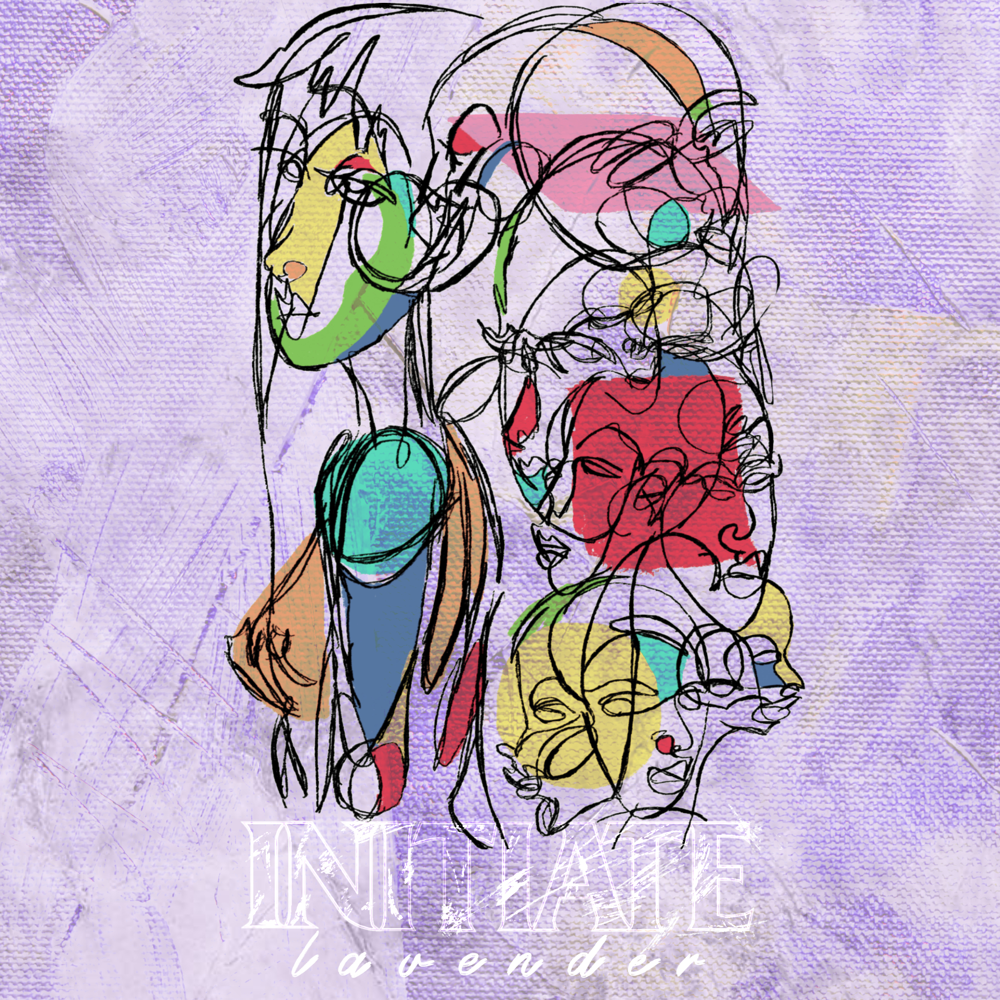

|
Visions of Bodies Being Burned, clipping.

To quote Stephen King's take on the album: "This shit sounds like the feeling of when you come home and notice everything you own has been taken away and replaced by an exact substitute. It's when the lights go out and you feel something behind you, you hear it, you feel its breath against your ear, but when you turn around, there's nothing there."
I don't really know what he was going on about, but I was cautiously optimistic ever since clipping. announced that their next project would be the second-half of what was originally conceived as a double album alongside the material from last year’s excellent There Existed An Addiction To Blood. While arguably more consistent than its older sibling, this body of work perfectly complements TEAATB and the proverbial spooky season.
Go to your room, light a candle, turn off the lights, and try not to flinch as you listen to 16 scary stories disguised as rap songs.
|
RTJ4, Run The Jewels

Combining the increasing political poignancy of their second and third records, and slapping it onto the pure ferocity of what was Run The Jewels 2, the Yankee and the Brave have perfectly captured the zeitgeist of the closing of Donald Trump’s first term as president. RTJ4 draws particular attention to America’s history of falling deaf to those it callously deems undeserving, and reminds us that while some of us may have been successfully robbed of our empathy, we must find solidarity in one another if America is to be rescued from the flames that seek to consume it
|
World House, MIL-SPEC

This will be a seminal work in hardcore, mark my words, and everyone involved with the project knows it too. To give you an idea of how monumental this album was believed to be, what is essentially the official lyric book is a full-color, letter-size zine with movie reviews, a comprehensive history of the band’s merch to date, and testimonials from other bands about how kick ass this record was before it was even released.
Just as I was in awe last year of Abuse of Power’s debut actually being their debut, I can’t comprehend how this was Mil-Spec’s first LP. They’ve been around for a few years at this point, but the slow build to their first full length has been more than worth it.
Go check this out if you’re not dumb. Fuck it, even if you are.
And that zine is available from Shining Life, btw.
|
Descendants of Cain, Ka

I can't write at even a quarter of the proficiency that this man can, so why the hell am I even trying?
Observations on a hard life by a hard man, invoking biblical imagery to explore familial ties (blood or otherwise), and the strings that come along with them.
If I Love (Mimi, Moms, Kev) doesn't make you feel something, I don't trust you and you probably have cold hands.
|
The New Abnormal, The Strokes

This is the first Strokes record I've ever listened to in full, so I don't have any interesting historical context to frame my enjoyment of this album against, but what I can tell you is that this record appeals to the hopeless romantic in me. With lines like, "I love you in the morning so you know it’s no lie", it seems to be the target demographic. This thing is catchy, breezy, and just plain fun. While Bad Decisions may never not sound like Billy Idol's Dancing With Myself and take me out of the moment every time, this record is going to be one of my go-to's for years to come.
Oscar, I'm sorry I took my sweet time getting around to listening to this, but it made it into my top ten, so you can't be THAT mad.
|

UNLOCKED, Denzel Curry & Kenny Beats
In the wake of some of the most refreshing hip hop collaborations this past year (see Boldy James and Freddie Gibbs' collaborations with The Alchemist), Denzel Curry and Kenny Beats have presented us with their take on the long-standing tradition by following in the footsteps of some of the most legendary projects in the canon (the artwork literally wears a Madvillainy/MF DOOM reference on its record sleeve). While the comparisons are easy to make, this record deftly pays homage to the greats without ever falling into parody; this is a project that is intent on taking hold of old school tendencies and pointing them in the direction of the future of the artform. While the seams can show at times, the fact that what essentially amounts to a stream-of-consciousness rap album made in the span of 72 hours can sound this good is nothing short of impressive.
|
Lament, Touché Amoré
After 2016’s heart wrenching Stage Four, I kept finding myself asking how this band was supposed to follow up on such a resolute display of emotion; how do you move on from losing a loved one and chronicling it in such a public fashion? Turns out you don’t, you just make do.
While not leagues away from the sounds of that previous release, Lament once again proves why this post-hardcore outfit is considered to be such a landmark group. Tracks like Reminders & I'll Be Your Host showcase a screamo band experimenting with pop-punk melodies and tendancies, but much here is not too out of left field, and at this point that’s still a high water mark for most other bands in this scene.
Life after death can be confusing for those left behind. How do we move forward from something so definitive? How can life be simultaneously joyous and suffocating? Touché don’t have the answers, but they are willing to try and figure that out with you.
|

Halo of Hurt, Seahaven
Long thought to have gone extinct, Seahaven have returned to gut check you in your sad boi feelings and show you how they've both matured and evolved since 2014's Reverie Lagoon.
I'd say the sounds on display here are bracingly dynamic, masterfully alternating from glass-fragile silences and angers that can only be born from disappointments. My good friend Manuel Franco may have put it best when he told me Halo of Hurt is "softly intense", and Joey Miranda may have put it most bluntly when she told me, "shit fucking hits."
|

On Circles, Caspian
On this record, Caspian finally free themselves from an all-encompassing theme/narrative and focus themselves on songs that slowly grow from simple, repeating arrangements to enveloping, and just plain good-ass post-rock. Circles upon circles upon circles, as the title suggests.
This more light-hearted approach to songwriting after what has been a bleak and tumultuous time in the band’s career is a welcomed addition to this band’s storied discography, and with a full-on vocal guest feature from Pianos Become the Teeth’s Kyle Durfey, I hope we see more of this energy in future releases.
|

Lavender, Initiate
2020 was an explosive year for California Hardcore. One only needs to look at the releases from Rotting Out, DRAIN, and Gulch to see that the Golden State is in the middle of a breathtaking revival for the genre, and Initiate are ready to carry that flame even further. While not a full length project like their peers' recent releases, Lavender is the foundational work for what is sure to be an eruptive record in 2021. While the sounds on display here may not be anything you haven't heard before, Initiate's take on the youth-crew style is as exciting and passionate as when you first remember hearing it.
Plus, this thing is only 11 minutes long, so they couldn't afford to miss. Stop reading this and go listen to this already.
|